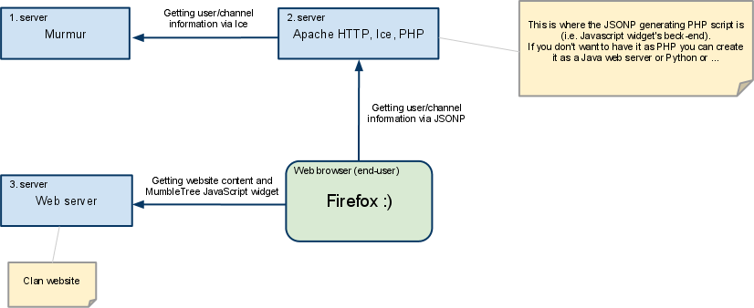

Do whatever you want :).
I would appretiate any feedback (use Mumble forum
thread).
Do whatever you want :).
I would appretiate any feedback (use Mumble forum
thread).
MumbleTree.js is a combination of JavaScript widget and PHP JSONP generator for easy inclusion of Mumble channel and user tree into a website.
MumbleTree was created for my own clan web site. It was supposed to be
an easy and quick solution how to include a user and channel tree into the website
in a special situations when Ice libraries are not available to the website.
As I feel someone can benefit from my work I've also started the
thread on the official Mumble forum.
MumbleTree is mainly a JavaScript widget that is capable of fetching channels and users information via JSONP and avoiding so called same-origin policy. Next to the widget itself is a JSON generator, which is a script in PHP. This script acts as a beck-end to the JavaScript widget. Both the widget and the generator script are as simple as possible without any unnecessary dependency.

Do whatever you want :).
I would appretiate any feedback (use Mumble forum
thread).
Insert into the page MumbleTree JS:
<script type="text/javascript" src="http://your.website.com/MumbleTree.js"></script>
and to the place where the tree is supposed to be rendered write:
<script type="text/javascript">
var mumbleTree = new MumbleTree({
url: "http://your.jsonp-generator.com"
});
</script>
Installing PHP generator requires a little bit of HTTP server and PHP configuration knowledge. If you are not able to install the environment by yourself, you can contact me via Mumble forum thread.
For default styling insert default stylesheet:
<link rel="stylesheet" type="text/css" src="http://your.website.com/MumbleTree.css" />
Check the source code of this page as well.